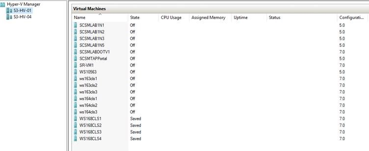

Import All Virtual Machines in a Folder using Powershell
Hello Everyone
Quick blog post to walkthrough a script that I used during my Windows Server Technical Preview 5 Lab refresh. I used below script to search through a folder and look for all the virtual machines, and then get them imported in to Hyper-V. Credit should go to Ben who blogged about this few years back but the script was specific for Windows Server 2012 R2 which uses XML for VM configuration. With Server 2016, we have a new binary file format for VM Configuration and this new format uses .VMCX file extension.
I have modified this script from Ben, which can now look for all VMCX files and then import all the VMs in to Hyper-V
Search and Import VMs created using Windows Server 2016 Technical Preview
Get-ChildItem d:\vm -Recurse -Filter "Virtual Machines" | %{Get-ChildItem $_.FullName -Filter *.vmcx} | %{import-vm $_.FullName -Register}
Search and Import VMs created using Windows Server 2012 R2
Get-ChildItem d:\vm -Recurse -Filter "Virtual Machines" | %{Get-ChildItem $_.FullName -Filter *.xml} | %{import-vm $_.FullName -Register}
“D:\VM” is the folder location given to search for Virtual Machine configuration files.


Reference : – https://blogs.msdn.microsoft.com/virtual_pc_guy/2013/08/21/bulk-registering-virtual-machines-with-powershell/